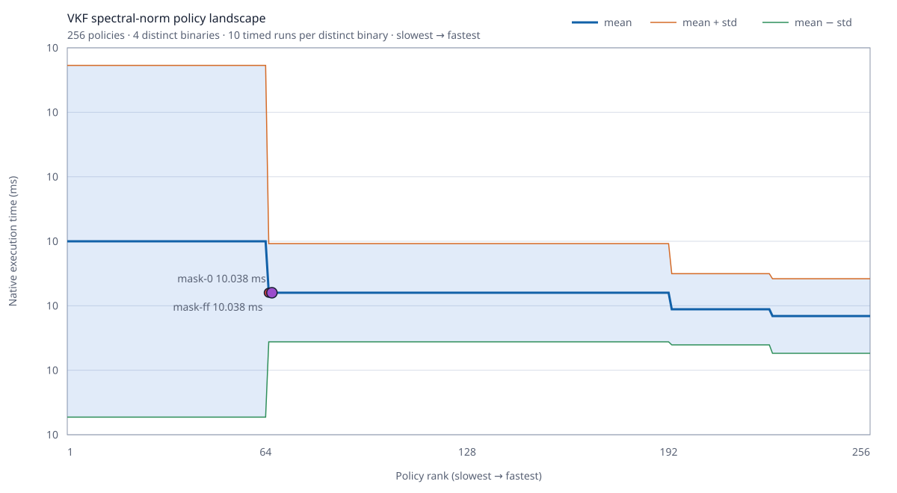

VKF 0.4.5 Optimizer Policy Landscape

This experiment compiles the exact spectral-norm medium VKF program under every combination of eight legal optimizer switches. The compiler verifies all 5 function landscapes against the scalar policy; the chart focuses on the 256 candidates for spectral_norm, deduplicates byte-identical machine code, and times each distinct binary 10 times in interleaved rounds.
| Result | Value |
|---|---|
| Exhaustively searched functions | 5 |
| Correct function policies | 1280 / 1280 |
| Correct policies | 256 / 256 |
| Distinct machine-code binaries | 4 |
| Actual executions | 1127 |
| Search time | 235548.0 ms |
| Slowest policy mean | 10.082 ms |
| Fastest measured policy | mask-0 |
| Fastest measured mean | 10.038 ± 0.042 ms |
Default mask-ff mean | 10.038 ± 0.042 ms |
| Fastest/slowest spread | 1.01× |
| Selected/default difference | 0.0% |
All Five Tested Function Landscapes
Every function was compiled under all 256 legal masks and every result matched the scalar baseline. The focused timing chart above measures spectral_norm; this table exposes the complete five-function verification instead of hiding it inside the JSON receipt.
| Function | Policies tested | Correct | Distinct binaries | Selected policy |
|---|---|---|---|---|
$entry | 256 | 256 | 1 | mask-0 |
multiply_at_av | 256 | 256 | 1 | mask-0 |
multiply_atv | 256 | 256 | 2 | mask-8 |
multiply_av | 256 | 256 | 2 | mask-8 |
spectral_norm | 256 | 256 | 4 | mask-0 |
The complete machine-readable evidence, including the 256 focused policy records, all 1280 compiler-verified function policies, hashes, output, compiler identity, and host conditions, is windows-x64-v0.4.5-ci.json.
What The Policy Bits Mean
| Bit | Policy |
|---|---|
| 0 | Borrow aggregate parameters instead of copying them. |
| 1 | Forward aggregate results directly into their destination. |
| 2 | Use packed matrix-reduction kernels when the exact safe loop shape is proven. |
| 3 | Keep proven integer locals as native integers. |
| 4 | Address proven vector indices with native integer registers. |
| 5 | Specialize parity checks. |
| 6 | Fuse multiply-add where target support and numeric rules permit it. |
| 7 | Use packed dual-dot reductions when the exact safe loop shape is proven. |
The Idea
A single global optimization recipe is rarely best for every program. VKF represents lowering choices as data, emits several legal machine-code variants, verifies their result, and can retain the best policy for the exact program and host. A compilation time limit bounds the search in normal use; exhaustive search is an explicit benchmark mode.
Code-identical policies are timed once. For the focused function, 256 logical policies collapse to 4 binaries. Across the complete per-function search, the experiment performs 1127 executions rather than naively timing every alias independently.
Honest Interpretation
The robust result is the large policy landscape: the best basin is about 1.01× faster than the slowest legal policy. The exact 0.0% lead of mask-0 over mask-ff is smaller than run-to-run variance and was not stable in a separate order-reversed check. It is a measured winner, not proof that it is universally faster. Release defaults therefore remain conservative, while profiles and future selectors can learn from the larger, repeatable policy effects.
Reproduce
node benchmarks/policy-landscape/run.mjs --compiler=build/native-compiler-clang/bin/vkf-strict.exe --runs=10 --output=benchmarks/policy-landscape/evidence/windows-x64-v0.4.5The command is a benchmark tool only. Compiling or running VKF programs does not require Node, Python, a C++ compiler, assembler, or external linker.